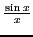
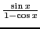
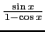
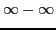
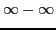
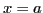
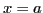

Other singularities require more analysis to diagnose. Consider the
functions
,
 and
 at the point
and
 at the point  . All three functions
evaluate to
. All three functions
evaluate to
 at that point, but have different kinds
of singularities. The first has a removable discontinuity, the second has
a finite discontinuity and the third has an infinite discontinuity.
See Figure 13.5.
at that point, but have different kinds
of singularities. The first has a removable discontinuity, the second has
a finite discontinuity and the third has an infinite discontinuity.
See Figure 13.5.
Figure:
The functions
,
and
.
|
An expression that evaluates
(for a particular value of the independent variable)
to
,
 ,
,
 ,
, ,
,
, ,  or
or  is called an indeterminate.
A function which takes an indeterminate form at 
is not defined for by the given analytical expression.
For example, suppose we have
is called an indeterminate.
A function which takes an indeterminate form at 
is not defined for by the given analytical expression.
For example, suppose we have
where for some value of the variable, as
For this value of  our function is not defined and we may therefore
assign to it any value we please. It is evident from what has gone before
(Case II, [§3.6]) that it is desirable to assign to the function a
value that will make it continuous when whenever it is possible to do so.
our function is not defined and we may therefore
assign to it any value we please. It is evident from what has gone before
(Case II, [§3.6]) that it is desirable to assign to the function a
value that will make it continuous when whenever it is possible to do so.
david joyner
2008-08-11